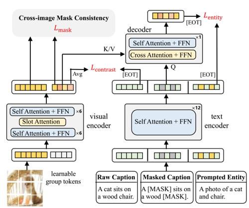
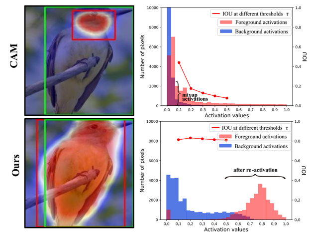
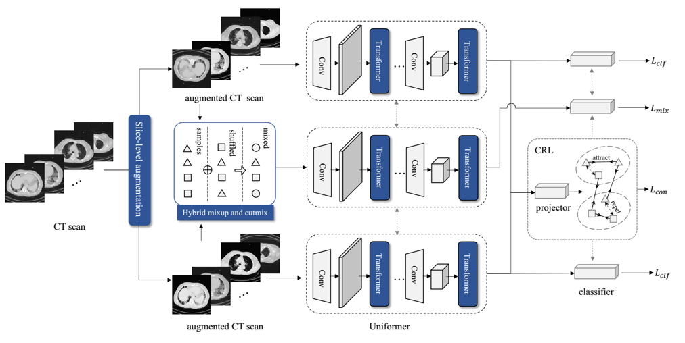
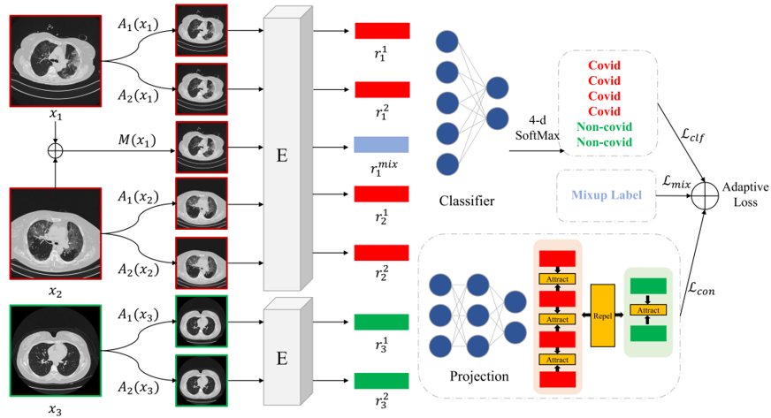
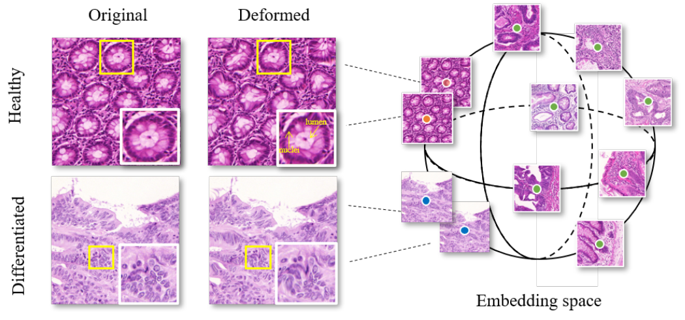

|

|
Learning Open-vocabulary Semantic Segmentation Models From Natural Language Supervision
Jilan Xu, Junlin Hou, Yuejie Zhang, Rui Feng, Yi Wang, Yu Qiao, Weidi Xie
CVPR 2023
arXiv / project page / code
Training open-vocabulary semantic segmentation models with image-text pairs only, which enables zero-transfer to various segmentation datasets.
|
|

|
CREAM: Weakly supervised object localization via class re-activation mapping
Jilan Xu, Junlin Hou, Yuejie Zhang, Rui Feng, Rui-Wei Zhao, Tao Zhang, Xuequan Lu, Shang Gao
CVPR 2022
arXiv
A weakly-supervised object localization model that generates better CAMs via soft-clustering algorithms.
|
|

|
CMC_v2: Towards More Accurate COVID-19 Detection with Discriminative Video Priors
Junlin Hou, Jilan Xu, Nan Zhang, Yi Wang, Yuejie Zhang, Xiaobo Zhang, Rui Feng
ECCV 2022 AIMIA Workshop
arXiv / code
A Transformer-based model with contrastive representation enhancement. Winner of the 2nd COVID-19 Detection in ECCV 2022.
|
|

|
CMC-COV19D: Contrastive Mixup Classification for COVID-19 Diagnosis
Junlin Hou*, Jilan Xu*, Rui Feng, Yuejie Zhang, Fei Shan, Weiya Shi
ICCV 2021, AIMIA Workshop.
paper / code
A ResNest-50 model combined with contrastive mixup technique for 3D COVID-19 CT image classification. Winner of the 1st COVID-19 detection challenge.
|
|

|
Data-Efficient Histopathology Image Analysis with Deformation Representation Learning
Jilan Xu, Junlin Hou, Yuejie Zhang, Rui Feng, Chunyang Ruan, Tao Zhang, Weiguo Fan
BIBM 2020, Oral
paper
Introducing a self-supervised deformation representation learning technique for histopathology image analysis.
|
|
Awards & Honors
- Winner of the 1st & 2nd COVID-19 Detection Challenge @ ICCV 2021 & ECCV 2022
- Winner of the 1st COVID-19 Severity Detection Challenge @ ECCV 2022
|
|
Service
Reviewer : ICCV23, ICASSP23, ICIP22
TA : Theory of Computation
|
This guy is good at website design.
|
|
{kind=link}